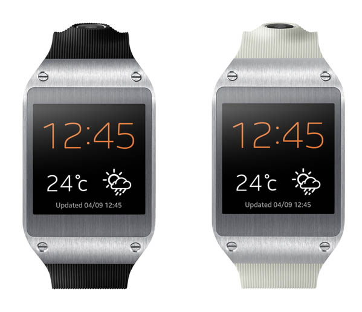
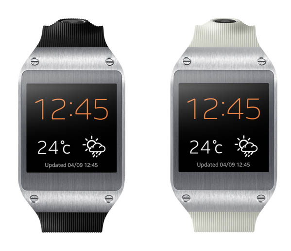

Akýllý Saat Nedir?
Akýllý saat için, bilgisayar sistemi ile entegre edilmiþ bir kol saati diyebiliriz. Akýllý saate þu aþamada giyilebilir teknoloji ürünlerinin en iyisi olarak bakabiliriz.
Akýllý saat için, bilgisayar sistemi ile entegre edilmiþ bir kol saati diyebiliriz. Akýllý saate þu aþamada giyilebilir teknoloji ürünlerinin en iyisi olarak bakabiliriz.
